Manual do Controle de Locações
Como instalar, configurar e usar o aplicativo no dia a dia: contratos, recebimentos, repasses, cobrança e relatórios.
Perfis de acesso
Cada pessoa entra com o próprio login e senha. Há dois perfis:
| Perfil | O que pode fazer |
|---|---|
| Administrador | Tudo, inclusive a área Administração: dados da administradora, usuários, rubricas, encargos padrão, índices, servidor, local dos dados e backups. |
| Usuário | Cadastros, contratos, meses, pagamentos, repasses, cobrança e relatórios. Não vê a área Administração. Troca a própria senha em Minha conta. |
Neste manual, cada parte indica para quem ela é. Os exemplos usam dados fictícios.
Parte 1 · Administrador
1. Instalar o servidor
O app fica num computador do escritório que permanece ligado durante o expediente (o "servidor"). Os outros computadores e os celulares acessam pelo navegador, sem instalar nada.
- Copie a pasta
controle-locacoespara esse computador (por exemplo, emC:\controle-locacoes). - Dê dois cliques em Iniciar servidor.bat. Se o Windows avisar "O Windows protegeu o computador", clique em Mais informações e depois em Executar assim mesmo.
- Abre uma janela preta, a janela do servidor, e o navegador abre sozinho no app (
http://localhost:8080). - Deixe a janela do servidor aberta (pode minimizá-la). Fechar a janela desliga o app para todos.
CONTROLE DE LOCACOES - servidor em funcionamento Dados gravados em: C:\controle-locacoes\dados Neste computador: http://localhost:8080 O acesso pelos outros computadores e pelo celular ainda nao esta liberado. Libere em: Administracao > Servidor > Liberar acesso na rede (neste computador). Primeiro uso: crie o administrador no navegador deste computador. Mantenha esta janela aberta (pode minimiza-la). Para encerrar, feche a janela.
Esse duplo clique é o único passo feito fora do app. O resto se configura dentro dele, inclusive o início automático com o Windows (seção 5).
2. Primeiro acesso: criar o administrador
Na primeira vez, o app pede para criar o administrador. Faça isso no próprio computador do servidor: por segurança, essa tela só funciona nele.
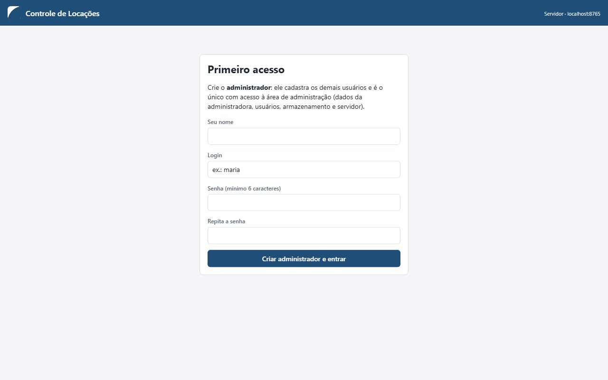
maria) e uma senha de pelo menos 6 caracteres. Você entra direto na Administração.3. Dados da administradora
Em Administração → Administradora, rubricas e encargos, preencha nome, CNPJ, CRECI, endereço, telefone, e-mail, site e o logotipo. Eles formam o cabeçalho de todos os relatórios em PDF.
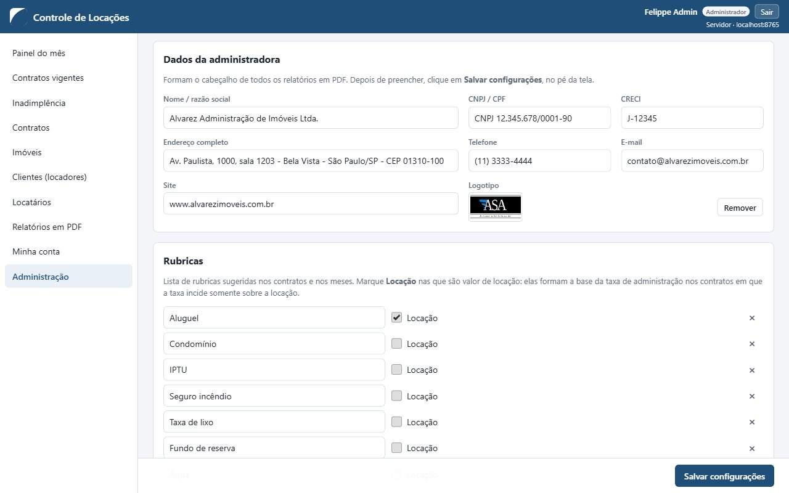
Na mesma área ficam:
- Rubricas: a lista de lançamentos sugeridos (Aluguel, Condomínio, IPTU…). Marque Locação nas que são valor de aluguel; elas formam a base da taxa de administração quando ela incide só sobre a locação.
- Encargos moratórios (padrão): multa, juros ao mês, honorários e índice de correção usados na cobrança de atrasados. Cada contrato pode ter os seus.
- Índices de correção: IGP-M, IPCA, INPC e IGP-DI vêm do Banco Central e se atualizam sozinhos.
4. Cadastrar os usuários
Em Administração → Usuários, cadastre cada pessoa da equipe. Não compartilhe logins: cada alteração fica registrada com o nome de quem a fez.
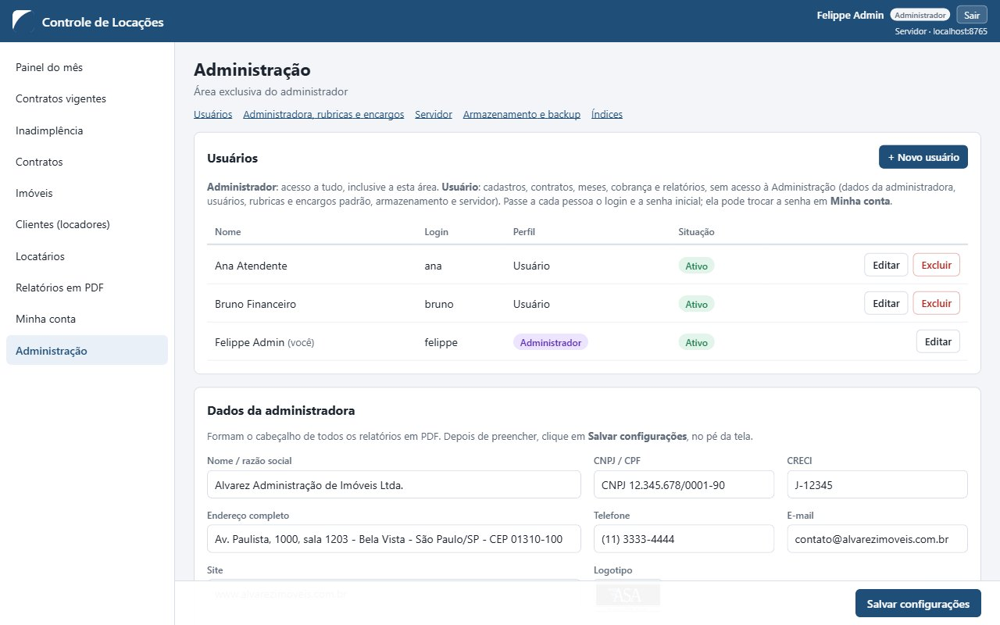
- Clique em + Novo usuário.
- Informe o nome, o login, o perfil (Usuário ou Administrador) e uma senha inicial.
- Passe o login e a senha para a pessoa. Ela pode trocar a senha em Minha conta.
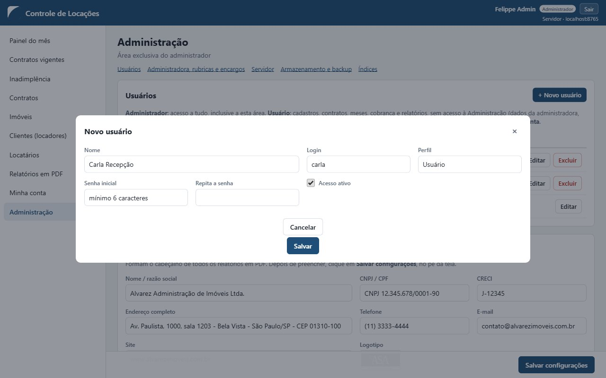
O app sempre mantém pelo menos um administrador ativo. Vale ter dois administradores, para não depender de uma só pessoa.
5. Servidor e acesso pela rede
Em Administração → Servidor:
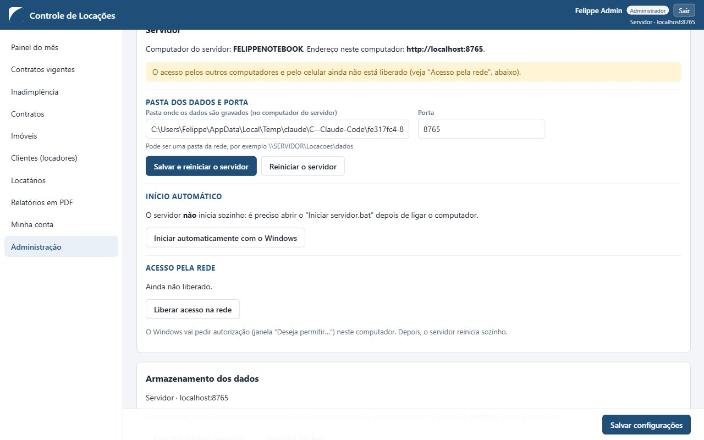
| Opção | Para que serve |
|---|---|
| Pasta dos dados | Onde os dados são gravados. Use uma pasta da rede para que o backup do escritório também a copie (ex.: \\SERVIDOR\Locacoes\dados). Marque Copiar os dados atuais para levar o que já existe. |
| Porta | Normalmente 8080. Só mude se outro programa já usar essa porta. |
| Iniciar automaticamente com o Windows | O servidor liga sozinho, minimizado, quando o computador é ligado. |
| Liberar acesso na rede | Libera os outros computadores e os celulares do escritório. Faça uma vez, no computador do servidor: o Windows pede uma autorização ("Deseja permitir…"). Depois, a seção mostra os endereços para a equipe, como http://192.168.0.10:8080. |
6. Acesso pelo celular e de fora do escritório
- No escritório (mesmo Wi-Fi): no celular, abra o endereço mostrado na seção Servidor (ex.:
http://192.168.0.10:8080) no Chrome ou no Safari e use "Adicionar à tela inicial" para criar um ícone. - Fora do escritório: instale o Tailscale (gratuito) no computador do servidor e no celular ou notebook, com a mesma conta. Depois, acesse
http://ENDERECO-TAILSCALE-DO-SERVIDOR:8080. Não é preciso mexer no roteador.
Alternativa sem servidor: a versão na internet, com os dados no Dropbox da administradora (próxima seção).
6A. Versão na internet (dados no Dropbox)
O app também funciona direto no navegador, sem servidor, pelo endereço https://felippealvarez.github.io/AdmLoc/. Os dados ficam numa única pasta do Dropbox da administradora (Aplicativos/AdmLoc ASA Controle de Locacoes/Locacoes), e toda a equipe trabalha nela. Ninguém escolhe pasta: o local é fixo.
Primeiro aparelho (administrador)
- Abra o endereço e clique em Conectar com a conta do Dropbox (administrador). Entre com a conta do Dropbox da administradora e autorize.
- Para trazer os dados do servidor: antes de criar qualquer usuário, copie todo o conteúdo da pasta de dados do servidor (inclusive
usuarios.json) para a pastaAplicativos/AdmLoc ASA Controle de Locacoes/Locacoesdo Dropbox e recarregue a página. Os mesmos logins e senhas continuam valendo. - Sem dados anteriores: crie o administrador na tela de primeiro acesso.
Aparelhos da equipe (convite)
- Em Administração › Usuários, crie o usuário da pessoa.
- Em Administração › Armazenamento dos dados, clique em Gerar convite para outro aparelho.
- Envie o link por um meio (ex.: e-mail) e o código de ativação por outro (ex.: telefone ou mensagem).
- A pessoa abre o link no aparelho dela, digita o código e entra com o login e a senha. Pronto: daí em diante, ela só vê a tela de login.
Aparelho conectado à conta errada do Dropbox (ex.: a pessoal): a tela de entrada mostra de qual conta são os dados. Use Desconectar este aparelho do Dropbox, logo abaixo, e ative o aparelho pelo convite. Ao conectar com Conectar com a conta do Dropbox (administrador), o Dropbox pede o login: entre com a conta da administradora.
Ícone do aplicativo
- Computador (Chrome ou Edge) e Android: use o botão Instalar o aplicativo neste aparelho da tela de entrada ou, no menu do navegador, Instalar / Adicionar à tela inicial.
- iPhone/iPad: no Safari, Compartilhar › Adicionar à Tela de Início antes de ativar o convite. Depois, abra o ícone, cole o link do convite no campo Link do convite e digite o código (o iPhone guarda o acesso do ícone separado do Safari).
Segurança: link + código dão acesso aos arquivos de dados; envie-os separados e só para a equipe. Aparelho perdido ou pessoa que saiu: desative o usuário e, se necessário, remova o aplicativo em Dropbox › Configurações › Aplicativos conectados (todos os aparelhos precisarão de convite novo). Depois de passar para a versão na internet, não use mais o servidor antigo: seriam duas bases separadas.
7. Backup e segurança
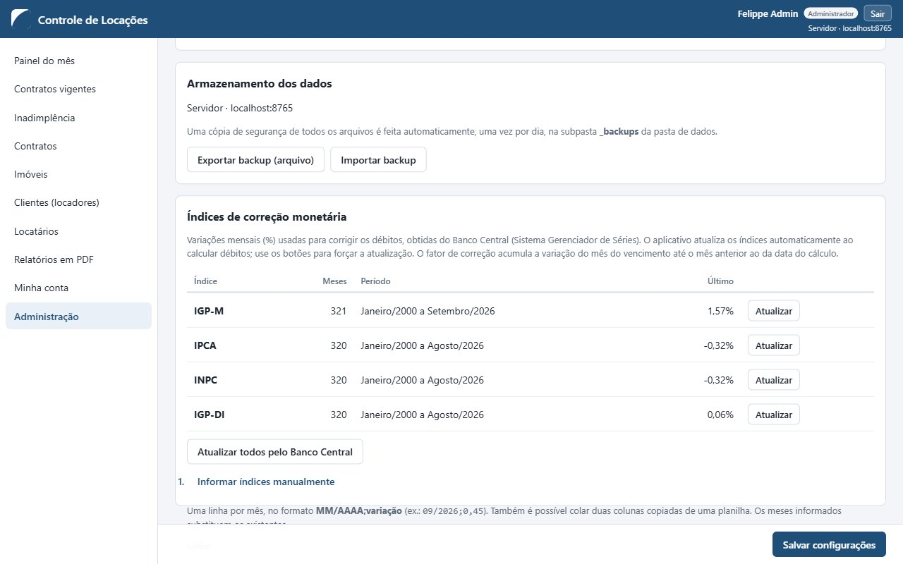
- Todo dia, antes da primeira alteração, o app guarda uma cópia automática de todos os arquivos em
_backups\AAAA-MM-DD, dentro da pasta dos dados. - Uma vez por mês, use Exportar backup (arquivo) e guarde o arquivo fora do computador do servidor (pen drive ou nuvem).
- Os dados contêm CPF e dados bancários: desative quem sair da equipe e não divulgue o arquivo
servidor.segredo.
8. Atualizar o app (sem perder dados)
Cada versão nova vem num único arquivo Controle-de-Locacoes-X.Y.Z.zip. A atualização troca só os arquivos do programa: dados, usuários e configurações não são alterados, e antes de qualquer troca o app guarda uma cópia da versão atual e dos dados em _versoes_anteriores.
- Entre como administrador e abra Administração → Servidor → Versão e atualização.
- Clique em Escolher arquivo, selecione o .zip da versão nova e clique em Instalar atualização.
- Aguarde alguns segundos: o servidor reinicia e o app recarrega já na versão nova (o número aparece no fim do menu).
Sem acesso ao app? No computador do servidor, extraia o .zip em outra pasta (ex.: Downloads) e dê dois cliques em Instalar atualizacao.bat. O passo a passo está no arquivo COMO ATUALIZAR.txt, dentro do pacote.
Parte 2 · Todos os usuários
Entrar e trocar a senha
- Abra no navegador o endereço que o administrador passou (ex.:
http://192.168.0.10:8080). - Digite seu login e sua senha. Em aparelho próprio, marque Manter conectado neste aparelho.
- No primeiro acesso em cada aparelho, leia e aceite os Termos de Uso.
- Troque a senha inicial em Minha conta.
Este manual fica sempre à mão no botão Manual de uso ↗, no menu à esquerda do app. No fim do menu ficam a versão instalada e os links Sobre e licenças e Termos de Uso.
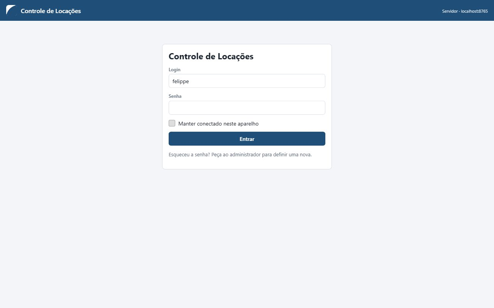
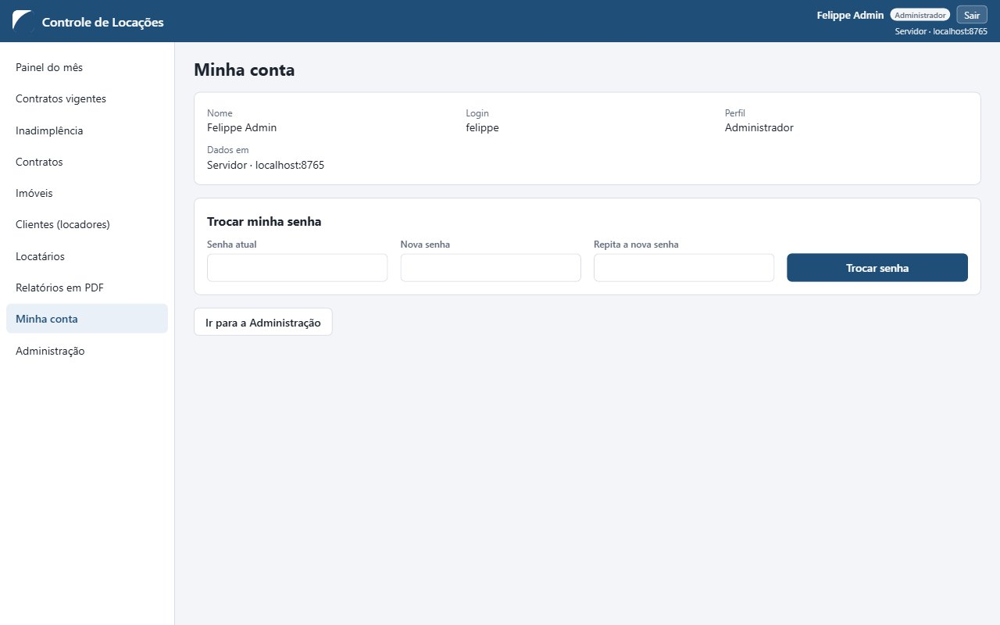
Painel do mês
É a tela inicial: a situação do mês em todos os contratos ativos. Use as setas ◀ ▶ para trocar o mês.
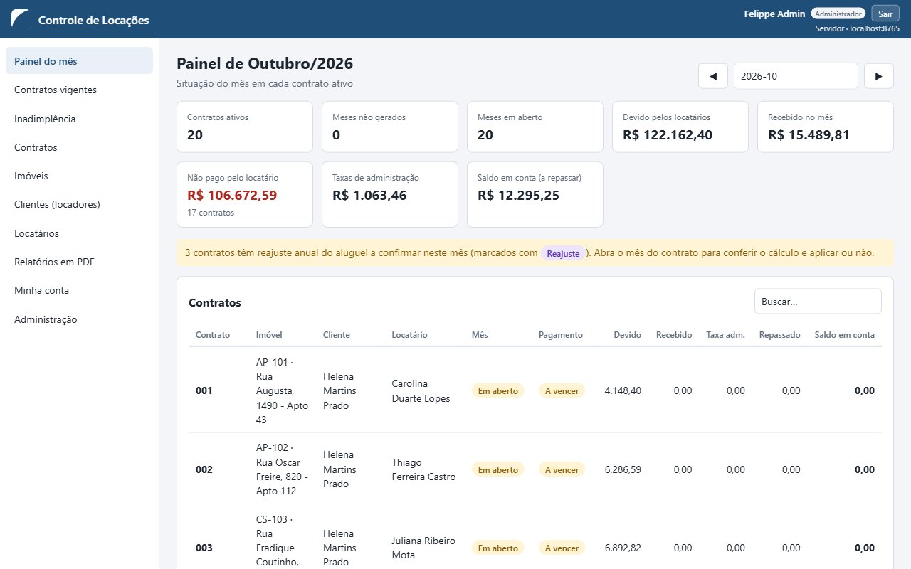
| Sinal na tela | Significado |
|---|---|
| Pago (verde) | O locatário pagou o mês. |
| A vencer (amarelo) | Ainda não chegou o vencimento. |
| Em atraso / Parcial (vermelho) | Venceu e não foi pago, ou foi pago só em parte. |
| Reajuste (roxo) | O contrato tem reajuste anual a conferir neste mês. |
| Não gerado | O mês ainda não foi criado. Use o botão Gerar … em N contratos. |
Cadastros e contratos
Cadastre nesta ordem, porque cada item usa o anterior:
- Clientes (locadores): inclua os dados bancários para o repasse.
- Imóveis: cada um ligado ao seu cliente.
- Locatários.
- Contratos: imóvel, locatário, aluguel, vencimento, reajuste, garantia, taxa de administração e encargos mensais.
Garantia: escolha o tipo e preencha os dados que aparecem: fiança (fiador e 2º fiador ou cônjuge, com CPF/CNPJ), seguro fiança (seguradora, CNPJ, apólice e vigência), caução (valor e onde está depositada) ou título de capitalização (emissora, CNPJ, número e valor). Os dados do fiador aparecem na opção Pago por do mês e no recibo.
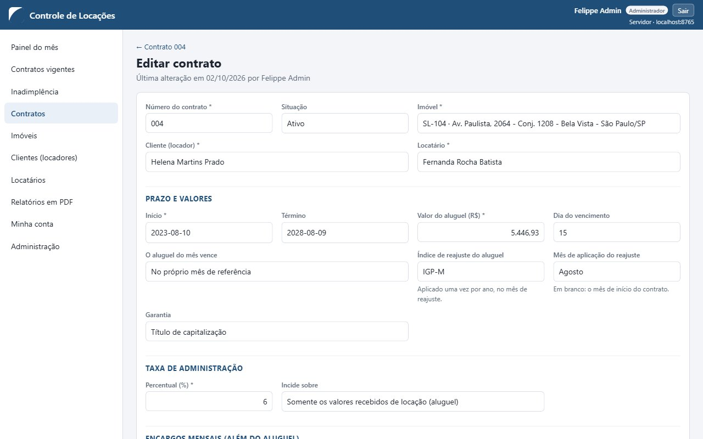
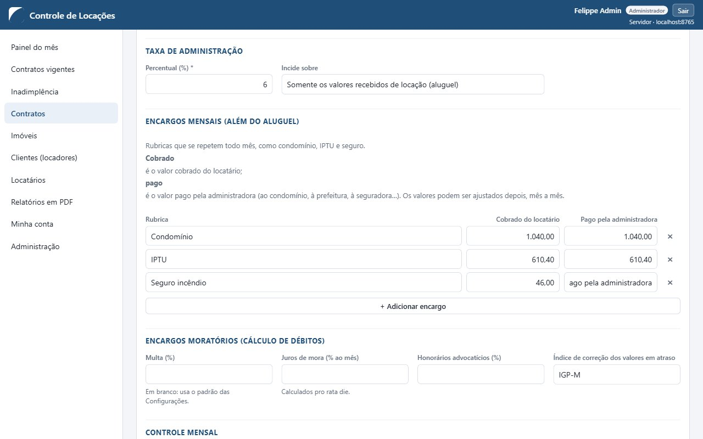
Clique num contrato para ver o resumo e o extrato mês a mês:
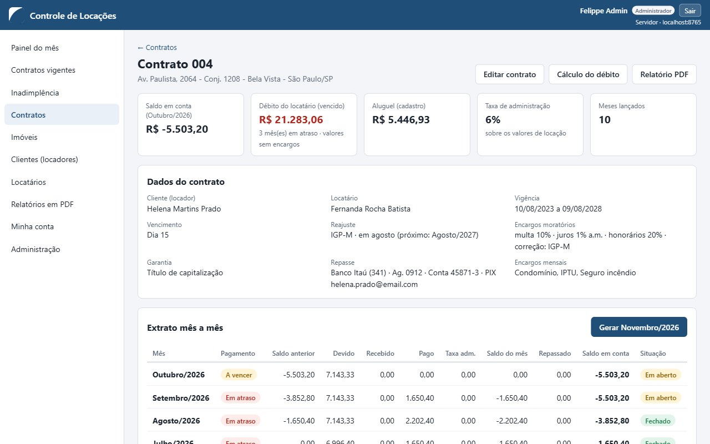
Lançar o mês
Cada mês do contrato tem uma tela própria. Para criar o mês, clique em Gerar mês na tela do contrato (ou gere para todos no painel). O mês novo já vem com as rubricas e os valores do mês anterior e com o saldo não repassado.
1. Pagamento do locatário
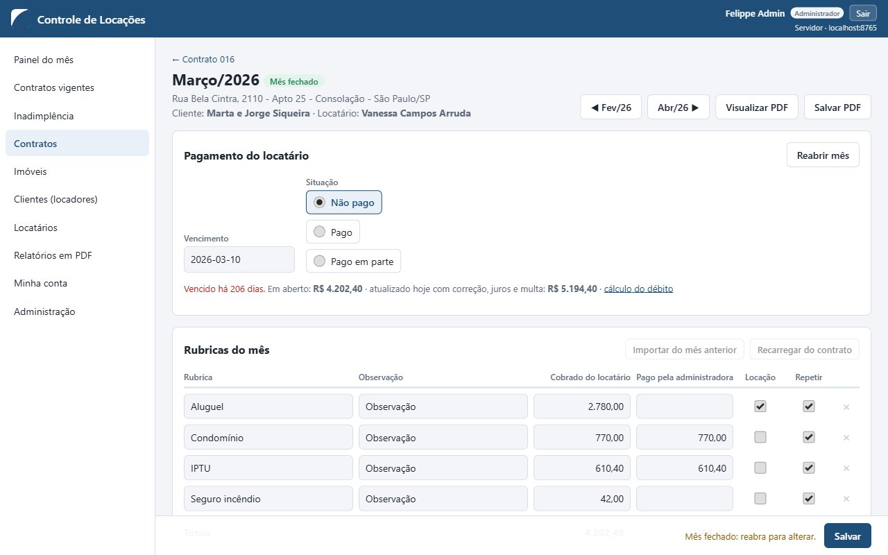
- Marque Pago, Pago em parte (informe o valor) ou Não pago, com a data do pagamento.
- Pagou atrasado? Clique em Calcular: o app preenche multa, juros e correção até a data do pagamento.
Pagamento em atraso, feito num mês posterior (ex.: aluguel de agosto pago em 15 de outubro): registre o pagamento no mês de referência (agosto), como sempre. O valor e a taxa de administração entram na prestação de contas do mês do pagamento (outubro), no item "Recebimentos de meses anteriores"; a prestação de agosto não muda e informa onde o pagamento foi lançado. Se agosto já estiver fechado, não é preciso reabri-lo. Vale para pagamentos a partir da data definida em Administração › Pagamentos em atraso na prestação de contas.
Recibo para o locatário
- Com o mês marcado como Pago ou Pago em parte e salvo, o botão Recibo (no alto da tela do mês) gera o recibo em PDF, numa folha, com o timbre da administradora.
- O recibo discrimina as rubricas cobradas do locatário (aluguel, condomínio, IPTU etc.), descontos e reembolsos, e a multa, os juros e a correção. Eles saem separados quando foram calculados pelo botão Calcular. A taxa de administração não aparece: ela é paga pelo locador à administradora.
- Informa quem recebe (o locador, representado pela administradora como procuradora), quem pagou, o imóvel, o mês de referência e a data do pagamento, e traz a ressalva de que a quitação vale só para os valores discriminados.
- Pago por: escolha o locatário (padrão), o fiador cadastrado no contrato ou outra pessoa (nome e CPF/CNPJ). Pode ser corrigido mesmo com o mês fechado.
- Pagamento parcial: o recibo mostra o total devido, o valor pago e o saldo que permanece em aberto.
- O número do recibo é o contrato e o mês (ex.: 004-07/2026). A assinatura é feita à mão ou eletronicamente, sobre a linha com o nome da administradora. A cidade do recibo vem de Administração › Cidade (local dos recibos); em branco, usa a cidade do imóvel.
- Para vários de uma vez: Relatórios › Recibos de aluguel, por mês do pagamento ou de referência, com filtro de cliente ou contrato.
2. Rubricas, descontos e reembolsos
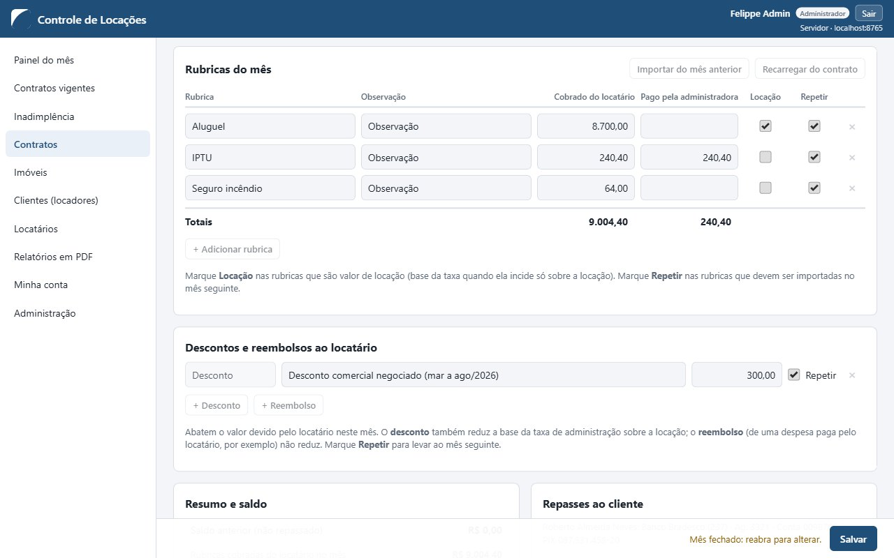
- Ajuste qualquer valor do mês. Use + Adicionar rubrica para despesas avulsas (ex.: um conserto pago pela administradora, descontado do cliente).
- Repetir: a rubrica vai para o mês seguinte. Locação: entra na base da taxa de administração.
- Desconto e reembolso ao locatário: abatem o valor devido. O desconto também reduz a base da taxa sobre a locação; o reembolso não reduz.
3. Resumo, repasse e fechamento
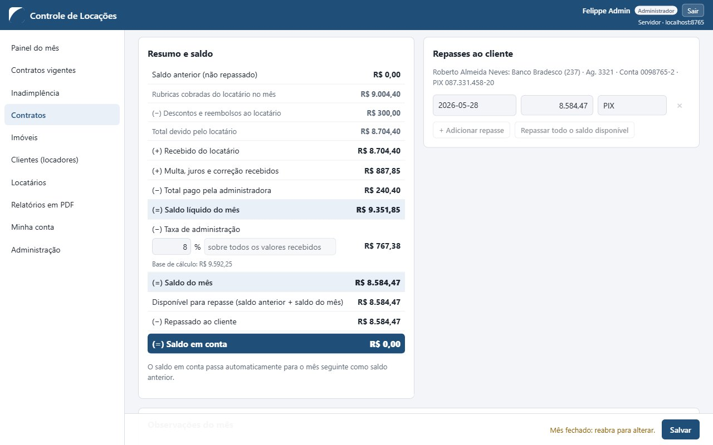
| Saldo anterior (não repassado) | |
| + | Recebido do locatário, mais multa e juros recebidos |
| − | Pago pela administradora (condomínio, IPTU, consertos…) |
| − | Taxa de administração |
| − | Repasses ao cliente (com data) |
| = | Saldo em conta, que passa para o mês seguinte |
- Em Repasses ao cliente, clique em Repassar todo o saldo disponível (ou informe outro valor) e confira a data. Os dados bancários do cliente aparecem logo acima.
- Clique em Salvar, no pé da tela.
- Quando o mês estiver conferido, clique em Fechar mês. O mês fica bloqueado para edição e pode ser reaberto se preciso.
Corrigiu um mês antigo? Os saldos dos meses seguintes se recalculam sozinhos.
Reajuste anual do aluguel
No mês de reajuste do contrato, aparece um aviso com o índice acumulado dos 12 meses anteriores e o novo valor do aluguel já calculado.
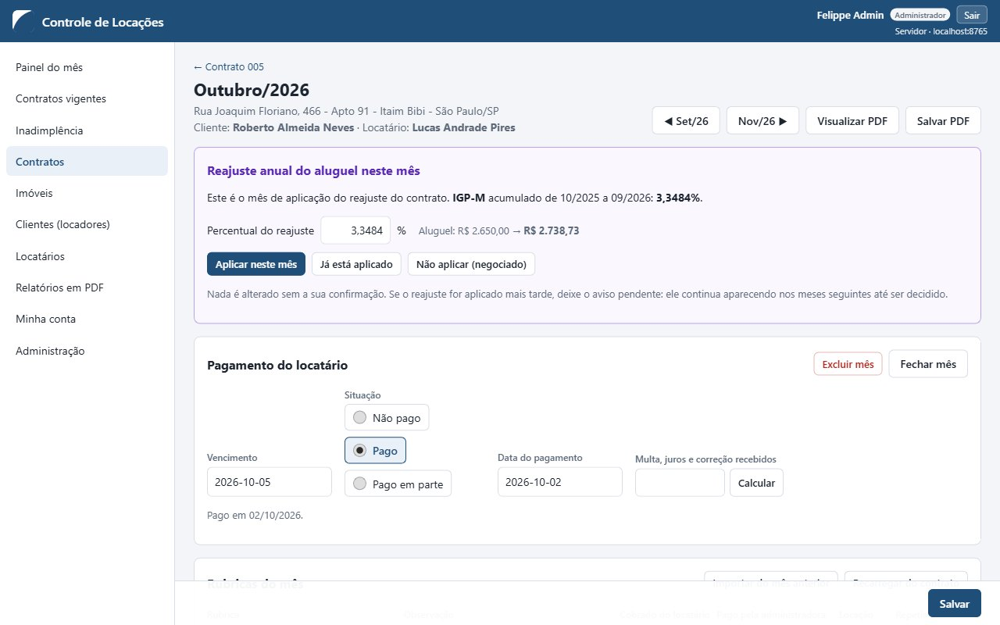
- Aplicar neste mês: atualiza o mês, o aluguel do contrato e os meses seguintes. Depois, clique em Salvar.
- Já está aplicado: o valor já foi reajustado.
- Não aplicar (negociado): registra que o reajuste deste ano não será aplicado.
- Se ainda não houver decisão, apenas deixe o aviso: ele continua aparecendo nos meses seguintes.
Cobrança e inadimplência
Cálculo do débito de um contrato
Na tela do contrato, clique em Cálculo do débito. Os cálculos ficam salvos no contrato: para atualizar uma cobrança, basta abri-la, mudar a data e salvar ou gerar o PDF.
- Cálculo: escolha um cálculo salvo ou + Novo cálculo; dê um nome, a data e o tipo (extrajudicial ou judicial, com número do processo, juízo, ajuizamento e citação).
- Critérios: começam iguais aos do contrato. É possível trocar o índice (IGP-M, IPCA, INPC, IGP-DI, IPCA-E, UFIR-RJ), os juros (% ao mês, taxa legal do art. 406 do CC, SELIC ou sem juros), a capitalização, a multa e aplicar a transição da Lei 14.905/2024.
- Débitos: os meses vencidos e não pagos entram sozinhos; desmarque os que não quiser. Em + Outro débito, inclua reparos, diferenças ou aluguéis anteriores ao controle no aplicativo.
- Custas e despesas: corrigidas desde a data do pagamento.
- Honorários: no extrajudicial, contratuais (% sobre o total); no judicial, sucumbenciais (% sobre a condenação, % sobre o valor da causa ou valor fixo).
- Judicial: multas processuais (litigância de má-fé, embargos protelatórios, astreintes etc.) e a multa e os honorários do art. 523, § 1º, do CPC.
- Pagamentos e amortizações: pagamentos do débito, depósitos judiciais, levantamentos. O débito é atualizado até a data de cada pagamento; o valor abate primeiro juros e multa (art. 354 do CC) ou o principal, nos débitos mais antigos (art. 355), proporcionalmente, nas custas primeiro ou num mês escolhido. Os pagamentos valem para todos os cálculos do contrato e para a Inadimplência; os pagamentos em parte lançados nos meses entram sozinhos.
- Prestação de contas do locador: marque Lançar e informe a data em que o valor ficou disponível (ex.: depósito judicial: data do levantamento). O valor entra na prestação de contas desse mês, como "Recebido de débito em atraso", com a taxa de administração do contrato (pode ser desmarcada). O valor a lançar pode ser ajustado, por exemplo, para excluir a parte dos honorários.
- Visualizar PDF / Salvar PDF: demonstrativo com credor, devedores (locatário e fiadores), critérios, cada item com fator de correção, juros e multa, os pagamentos abatidos e o total. No judicial, sai como demonstrativo discriminado e atualizado do crédito (art. 524 do CPC).
- Salvar planilha Excel: sem pagamentos e com juros ao mês simples, a planilha sai com fórmulas e a folha "Índices": mudando a data, os percentuais ou incluindo meses no Excel, tudo é recalculado. Nos demais casos, sai com os valores calculados pelo aplicativo.
Relatório de inadimplência
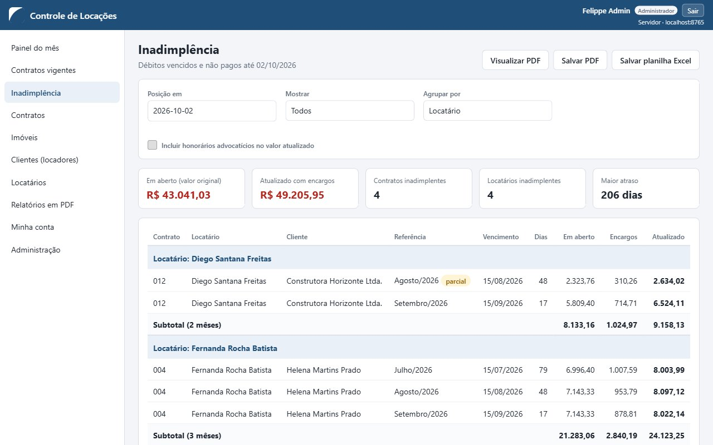
Boletos (prévia)
Reúne, para cada contrato do mês, os dados que o banco pede para emitir o boleto, cada um com o botão Copiar. Basta copiar e colar no sistema de boletos do banco.
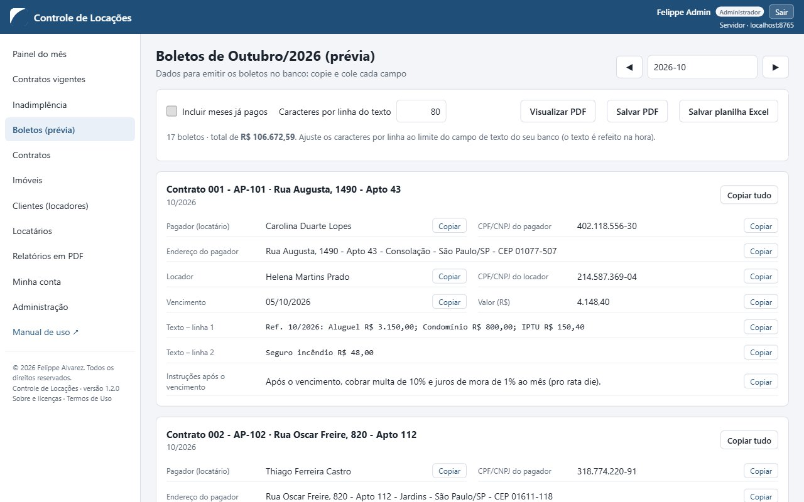
- Gere o mês dos contratos (Painel do mês) e confira os valores.
- Abra Boletos (prévia) no menu e escolha o mês. Por padrão aparecem só os meses ainda não pagos; marque Incluir meses já pagos para ver todos.
- Em Caracteres por linha do texto, informe o limite do campo de texto do seu banco (por exemplo, 40 ou 80). As rubricas são reorganizadas na hora para caber em 3 linhas; se não couberem, as últimas são somadas em "Outros encargos".
- Para cada contrato, copie os campos para o sistema do banco, ou use Copiar tudo.
No mês de um contrato, o botão Prévia do boleto mostra só aquele contrato:
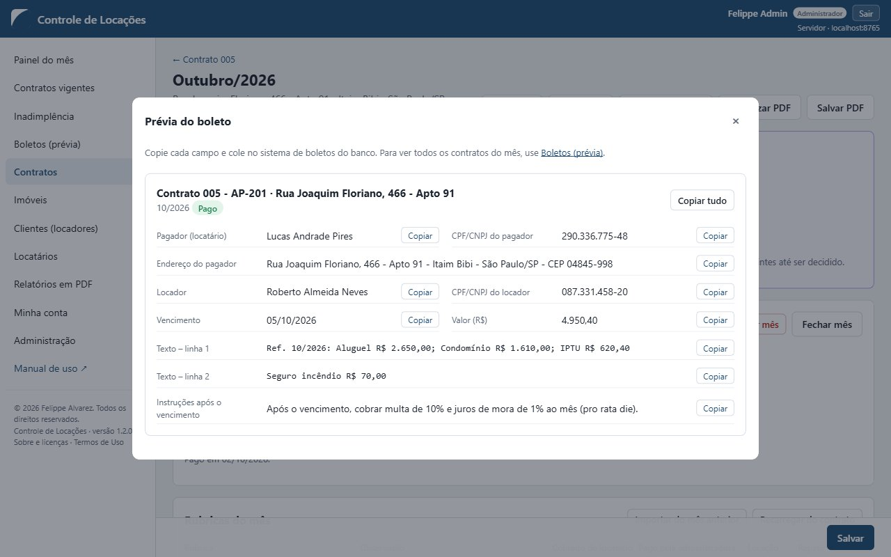
Muitos boletos? Use Salvar planilha Excel: ela traz uma linha por boleto, com todas as colunas. Vários bancos aceitam emissão em lote a partir de planilha; nesse caso, basta ajustar as colunas ao modelo do banco.
Contratos vigentes
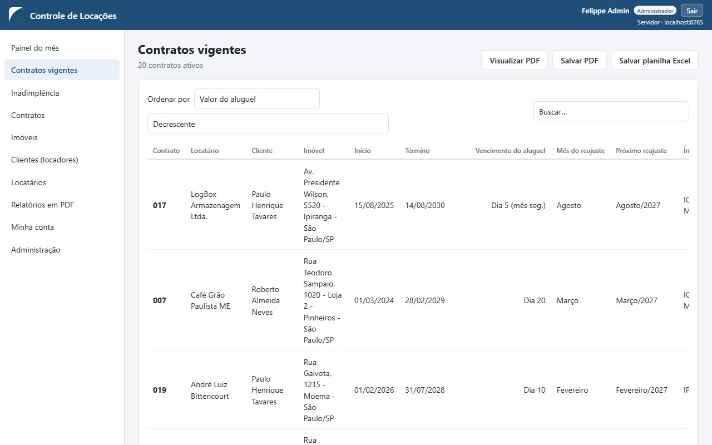
Os avisos ajudam a planejar: Este mês no reajuste e em N dias nos contratos que terminam em até 90 dias.
Relatórios
Em Relatórios, escolha o relatório no primeiro campo. Todos têm Visualizar PDF, Salvar PDF e Exportar Excel.
Demonstrativo (prestação de contas)
- Escolha: por contrato, imóvel ou cliente.
- Escolha o período (um mês ou vários) e o formato: detalhado (rubricas de cada mês) ou resumido (uma linha por mês).
- Visualizar PDF abre a prévia; Salvar PDF grava o arquivo (no Chrome e no Edge do computador, dá para escolher a pasta).
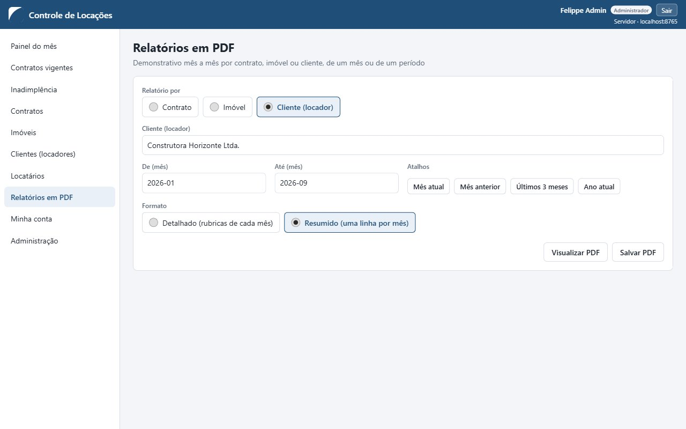
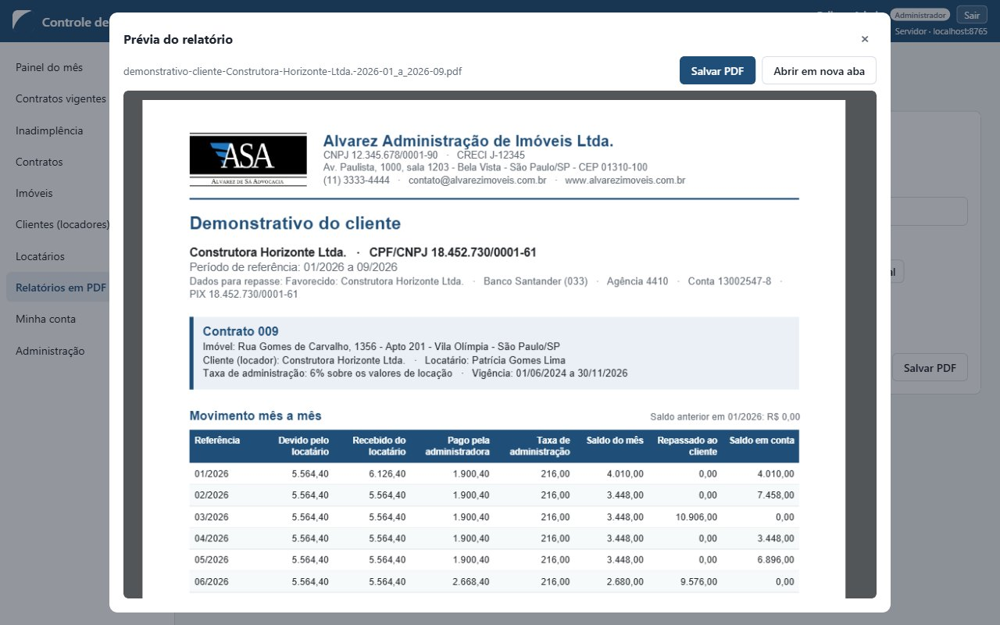
Exemplos de relatórios gerados:
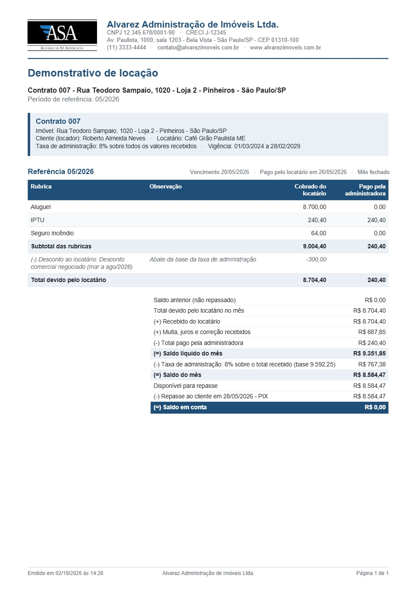
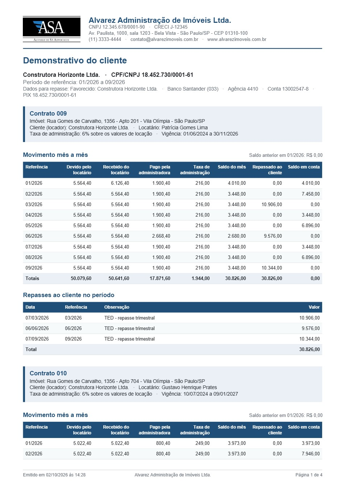
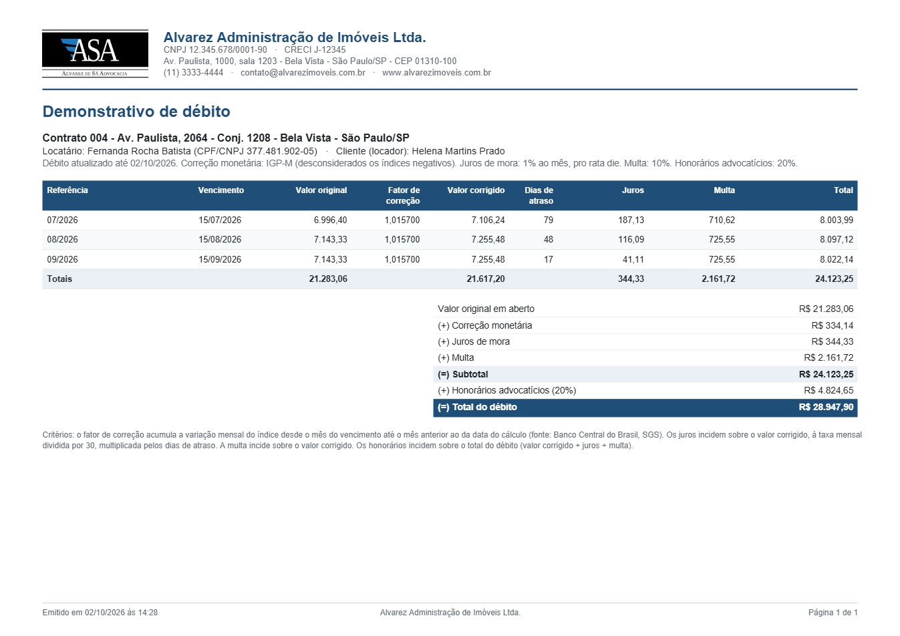
Demais relatórios
| Relatório | O que mostra |
|---|---|
| Clientes e seus imóveis | Para cada cliente: imóveis cadastrados, com e sem contrato ativo, e a soma dos aluguéis ativos. Opção de listar os imóveis de cada cliente, com situação, locatário, aluguel e vigência. |
| Relação de imóveis | Todos os imóveis, só os com contrato ativo ou só os sem; agrupados por cliente ou por cidade e bairro. |
| Taxa de administração recebida | Consolidado por mês, por cliente, por contrato ou por inquilino, com opção de detalhar mês a mês. Conta pelo mês do pagamento (caixa) ou pelo mês de referência. |
| Informe de rendimentos (IR) | Por cliente e ano: aluguéis, multa e juros, outros valores, taxa de administração, despesas pagas e repasses, mês a mês, e os valores por locatário. Um cliente ou todos (um por página). |
| Conferência para a DIMOB | Por contrato e ano: locador, locatário (com CPF/CNPJ), imóvel, aluguéis recebidos e comissão. No Excel, também mês a mês. Serve para conferência; não substitui o programa da Receita. |
| Repasses e saldos a repassar | Repasses feitos no período (por cliente, contrato ou data) e o saldo em conta atual de cada contrato. |
| Contratos a vencer e reajustes | Contratos ativos com término nos próximos dias (e os de prazo já encerrado) e os reajustes anuais próximos. |
| Vacância | Imóveis sem contrato ativo, desde quando e há quantos dias. |
Contrato ativo é o que está com situação Ativo no cadastro, mesmo com o prazo encerrado. O informe de rendimentos e a DIMOB são documentos auxiliares: confira os critérios com o contador.
No celular
O app funciona no navegador do celular, com o mesmo login. O menu fica no botão ☰, no canto superior esquerdo.
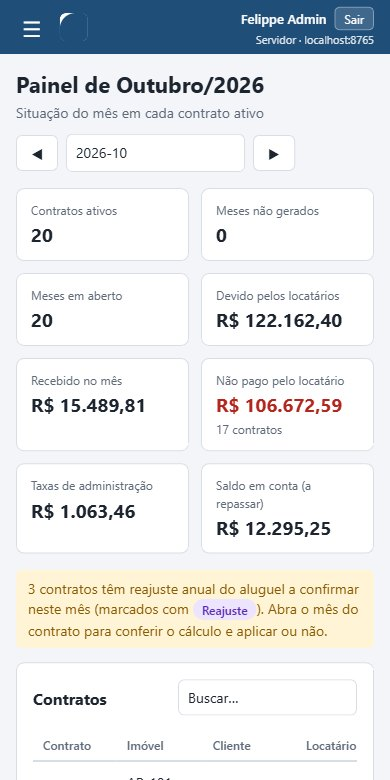
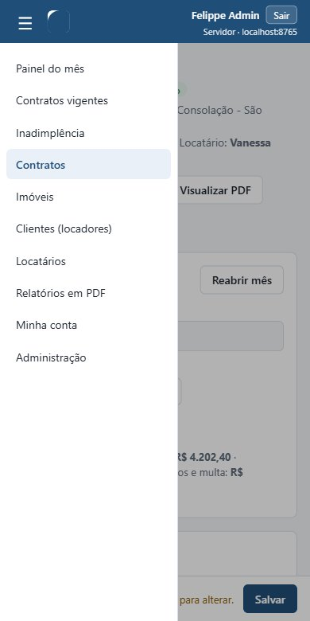
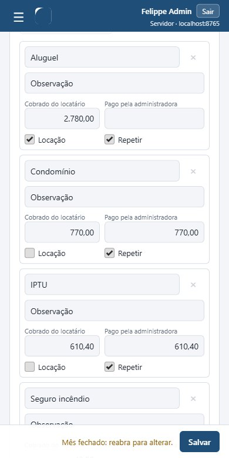
Rotina do mês
Uma sugestão de ordem para o trabalho mensal:
No Painel do mês, clique em Gerar … em N contratos. Confira os contratos com Reajuste.
No mês do contrato, marque Pago com a data. Lance condomínio, IPTU e despesas pagas. Faça o repasse e salve.
Abra Boletos (prévia) e emita os boletos do mês no banco, copiando os dados de cada contrato.
Abra Inadimplência, gere o cálculo do débito de quem atrasou e envie a cobrança.
Gere os demonstrativos para os clientes, confira e Feche os meses. O administrador exporta o backup.
Dúvidas e problemas
Apareceu "Sem conexão com os dados"
O app não está conseguindo falar com o servidor. Verifique se a janela do servidor está aberta no computador principal (se não estiver, abra o Iniciar servidor.bat) e se você está na rede do escritório. Depois, clique em Tentar novamente.
Esqueci a senha
Peça ao administrador: em Administração → Usuários → Editar, ele define uma nova senha. Depois, troque-a em Minha conta.
Apareceu "foi alterado em outro computador"
Outra pessoa salvou o mesmo cadastro ou o mesmo mês enquanto você editava. O app recarrega os dados para nada ser perdido: confira e refaça a sua alteração.
Não consigo editar um mês
O mês está fechado. Clique em Reabrir mês, faça a correção, salve e feche de novo.
Os dados da administradora não aparecem nos relatórios
Eles precisam ser preenchidos e salvos pelo administrador em Administração (botão Salvar configurações, no pé da tela).
O locatário pagou um mês atrasado que estava em aberto
Abra aquele mês, marque Pago com a data real, clique em Calcular para os encargos e salve. O valor sai da inadimplência e o saldo dos meses seguintes se ajusta sozinho.
Não vejo o item Administração no menu
Ele aparece só para administradores. Se você precisa de acesso, peça ao administrador para mudar o seu perfil.
O botão Copiar não funcionou
Alguns navegadores bloqueiam a cópia automática. Selecione o texto com o mouse (ou toque longo, no celular) e use Ctrl+C.